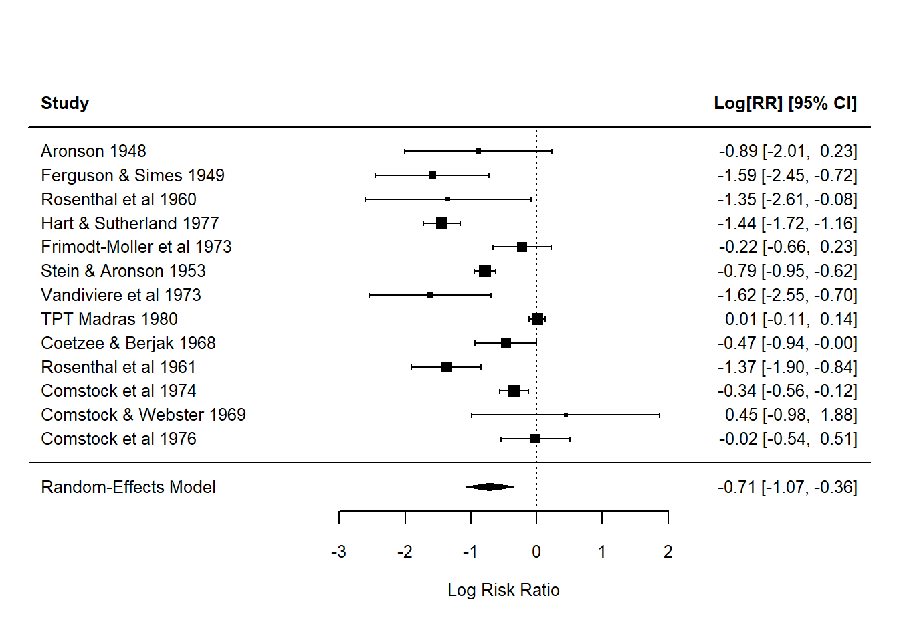
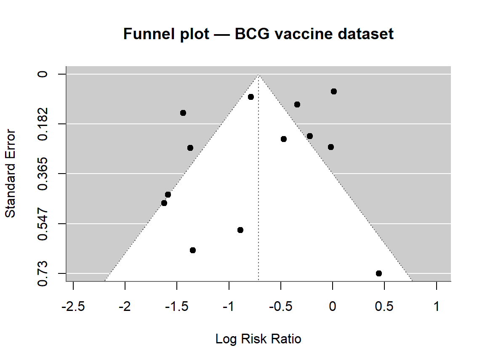

library(tidyverse)
library(metafor)
set.seed(42)
theme_set(theme_minimal(base_size = 12))Week 4, Session 2 — Meta-analysis basics
Course 3 — Biostatistics Courses
Note
Inference lab: Hypothesis → Visualise → Assumptions → Conduct → Conclude.
Learning objectives
- Fit a random-effects meta-analysis with
metafor::rma. - Produce forest and funnel plots, and interpret between-study heterogeneity (τ², I²).
- Assess small-study effects and publication bias informally.
Prerequisites
Comfort with effect sizes on the log scale.
Background
Meta-analysis pools effect estimates across studies to sharpen an overall answer. Fixed-effect models assume all studies estimate one true effect; random-effects models assume true effects vary around a common mean. In biomedical research, heterogeneity is the rule rather than the exception, so random effects are the default — and between-study variance (τ²) and the proportion of total variance due to heterogeneity (I²) become part of the primary reporting, not an afterthought.
Forest plots display each study’s estimate with its confidence interval next to the pooled estimate. Funnel plots display study precision against effect size; asymmetry hints at small-study effects and potential publication bias. Neither plot settles the question — Egger’s test, trim-and-fill, and careful inspection of which small studies are missing are all part of the routine.
Setup
1. Hypothesis
H₀: pooled log risk ratio = 0 (no overall effect). H₁: pooled log RR ≠ 0. α = 0.05.
2. Visualise — use a built-in dataset
dat <- escalc(measure = "RR",
ai = tpos, bi = tneg, ci = cpos, di = cneg,
data = dat.bcg, slab = paste(author, year))forest(rma(yi, vi, data = dat), header = TRUE, cex = 0.8)
3. Assumptions
- Between-study heterogeneity exists (τ² > 0) in virtually every real meta-analysis — a random-effects model absorbs it, a fixed-effect model does not.
- Funnel-plot asymmetry does not prove publication bias; it is consistent with several mechanisms.
4. Conduct
fit <- rma(yi, vi, data = dat, method = "REML")
fit
Random-Effects Model (k = 13; tau^2 estimator: REML)
tau^2 (estimated amount of total heterogeneity): 0.3132 (SE = 0.1664)
tau (square root of estimated tau^2 value): 0.5597
I^2 (total heterogeneity / total variability): 92.22%
H^2 (total variability / sampling variability): 12.86
Test for Heterogeneity:
Q(df = 12) = 152.2330, p-val < .0001
Model Results:
estimate se zval pval ci.lb ci.ub
-0.7145 0.1798 -3.9744 <.0001 -1.0669 -0.3622 ***
---
Signif. codes: 0 '***' 0.001 '**' 0.01 '*' 0.05 '.' 0.1 ' ' 1funnel(fit, main = "Funnel plot — BCG vaccine dataset")
regtest(fit, model = "lm")
Regression Test for Funnel Plot Asymmetry
Model: weighted regression with multiplicative dispersion
Predictor: standard error
Test for Funnel Plot Asymmetry: t = -1.4013, df = 11, p = 0.1887
Limit Estimate (as sei -> 0): b = -0.1909 (CI: -0.6753, 0.2935)5. Concluding statement
Across 13 trials of the BCG vaccine, the pooled risk ratio for tuberculosis was 0.49 (95% CI 0.34 to 0.7; τ² = 0.31, I² = 92.2%). Between-trial heterogeneity was substantial; the pooled estimate should be interpreted with the heterogeneity statistics in view.
Quote τ² and I² alongside the pooled effect. A “significant” pooled effect with I² = 90% is a different creature from one with I² = 10%.
Common pitfalls
- Fixed-effect pooling when between-study heterogeneity is real.
- Quoting a pooled effect without its heterogeneity measures.
- Treating funnel-plot symmetry as a formal test rather than a visual prompt.
Further reading
- Viechtbauer W. (2010). Conducting meta-analyses in R with the metafor package. J Stat Softw.
- Higgins JPT et al. Cochrane Handbook for Systematic Reviews of Interventions.
Session info
sessionInfo()R version 4.5.2 (2025-10-31 ucrt)
Platform: x86_64-w64-mingw32/x64
Running under: Windows 11 x64 (build 26200)
Matrix products: default
LAPACK version 3.12.1
locale:
[1] LC_COLLATE=English_Germany.utf8 LC_CTYPE=English_Germany.utf8
[3] LC_MONETARY=English_Germany.utf8 LC_NUMERIC=C
[5] LC_TIME=English_Germany.utf8
time zone: Europe/Berlin
tzcode source: internal
attached base packages:
[1] stats graphics grDevices utils datasets methods base
other attached packages:
[1] metafor_5.0-1 numDeriv_2016.8-1.1 metadat_1.6-0
[4] Matrix_1.7-5 lubridate_1.9.5 forcats_1.0.1
[7] stringr_1.6.0 dplyr_1.2.0 purrr_1.2.2
[10] readr_2.2.0 tidyr_1.3.2 tibble_3.3.1
[13] ggplot2_4.0.3 tidyverse_2.0.0
loaded via a namespace (and not attached):
[1] gtable_0.3.6 jsonlite_2.0.0 compiler_4.5.2 tidyselect_1.2.1
[5] scales_1.4.0 yaml_2.3.12 fastmap_1.2.0 lattice_0.22-9
[9] R6_2.6.1 generics_0.1.4 knitr_1.51 htmlwidgets_1.6.4
[13] pillar_1.11.1 RColorBrewer_1.1-3 tzdb_0.5.0 rlang_1.2.0
[17] stringi_1.8.7 mathjaxr_2.0-0 xfun_0.57 S7_0.2.2
[21] otel_0.2.0 timechange_0.4.0 cli_3.6.5 withr_3.0.2
[25] magrittr_2.0.4 digest_0.6.39 grid_4.5.2 hms_1.1.4
[29] nlme_3.1-169 lifecycle_1.0.5 vctrs_0.7.3 evaluate_1.0.5
[33] glue_1.8.0 farver_2.1.2 rmarkdown_2.31 tools_4.5.2
[37] pkgconfig_2.0.3 htmltools_0.5.9